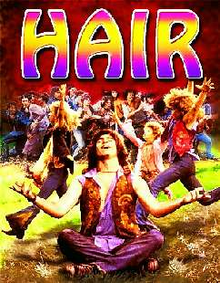

Борис Акунин
Мой календарь
Ну, или не делать эпиляцию. Можете даже не причесываться. Если же вы подумывали, не отпустить ли бороду - сегодня для этого отличный момент.
Отмечаем День Свободы Волос. Это свобода немаловажная - уж поверьте человеку, который в Советском Союзе носил прическу «афро», бился за нее с деканатом и в конце концов был вынужден подстричься, потому что в строгом государстве начальство лучше знает, какой длины волосы тебе положено иметь.
При грозном Николае Первом волосяная растительность тоже должна была повиноваться закону. Штатским носить усы строжайше воспрещалось, военным - строжайше вменялось. Солдатам, у которых усы не росли, их рисовали. Зато посмотришь на выстроенную шеренгу - любо-дорого: все как тараканы.
Маньяк регламентации всего и вся Петр Первый в 1705 году начал войну с бородой. При прежних царях борода, наоборот, считалась признаком добропорядочности и православности - русскому человеку со «скобленым рылом» ходить не полагалось. А Петр желал, чтобы его подданные выглядели европейцами - ну хотя бы горожане, потому что крестьяне сидят по деревням и своими бородами взор не раздражают.
Чем «культурнее» сословие, тем дороже обходилась привязанность к бороде. Для дворян, например, плата составляла 600 рублей в год - немыслимая сумма, да еще и не дай бог государю на глаза попадешься. С крестьян же брали всего две деньги, да и то лишь при въезде в город.
Так уж вышло, что в России всякая политическая «оттепель» начиналась с амнистии волосам.
Добрая Екатерина II, желавшая править не кнутом, а пряником, 6 апреля 1772 года запрет на бороды отменила. Эту историческую годовщину мы и празднуем. После смерти Николая Палкина эпоха Великих Реформ тоже началась с того, что россиянам дозволили решить гамлетовский вопрос брить или не брить. Во времена Перестройки студентов перестали гонять за неправильные прически - то-то расплодилось «готов» с «ирокезами». И ничего, мир не рухнул.
Свободу волосяному покрову! И вообще - всему!